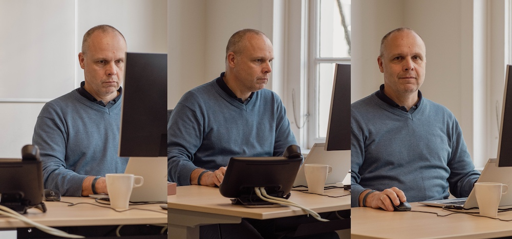

Does the HuC need to build national infrastructure?
Interview met Menno Rasch
Menno Rasch has now been director of the KNAW Humanities Cluster’s Digital Infrastructure department for several months. He has made good use of that time to get to know the organisation and his group of developers. He is convinced that his IT staff can have a major impact on research. But then successful collaboration within HuC must take shape outside the KNAW as well. Together we can always achieve more.

This may not be the coursework that immediately springs to mind when you think of a director of a digital infrastructure department, but Menno Rasch studied both computer science and philosophy in Utrecht. Before he began work at the KNAW Humanities Cluster (HuC) he used to tell IT people that he studied computer science and then also philosophy. With humanities scholars he usually turned it around—that he’d studied philosophy but then also computer science. But he hasn’t quite figured out how to present himself inside the HuC where the digital humanities are so central.
But notwithstanding this devilish dilemma, Menno feels completely at home at the HuC. “This is a rare opportunity for me. I have an affinity with the humanities. And I also get to work with a group of IT developers who are unique in the Netherlands and perhaps further, on an infrastructure that tries to be as close as possible to what researchers require. The development of digital infrastructure and research tools makes better and innovative research possible, which you can then also carry out more quickly. Facilitating that and making sure it actually happens is what I like most about my new job.”
Difficult puzzle
Despite this Menno realizes that it’s a difficult puzzle to solve the very specific needs of a researcher in a generic manner as possible. However, he emphasizes that this is precisely what is needed to increase reusability and thus speed up the process. “If we are able to set up a generic foundation very quickly, we can use the remaining project time to develop the specific components.”
To accomplish this, many conversations with researchers are needed. And especially the right conversations between IT staff and researchers. Menno: “If they have the right conversation at the right moment, you’ll see great things happen. It can lead to ground-breaking research that was not even possible a few years ago. IT staff really can have a significant impact on research.”
It is also important that researchers are enabled and supported. This also means that the institutional management must be convinced of the added value of a DI department. Fortunately, this is already the case at HuC. It is no coincidence that IT has been brought together within HuC, and DI is seen as providing significant added value through its collaboration with the HuC.
HuC strategically smart
“I think the HuC is strategically very smart. The institutes don’t operate as separate islands but have bundled their resources. It’s more efficient and more effective if you get IT staff together and ensure that they start to use each other’s infrastructure and ultimately grow this into a larger, common infrastructure.”
In recent years, the focus was on creating a single DI department. That process has now been completed. Menno: “I see a department, a group. So now is the time to work towards an integrated infrastructure and to present the department more compellingly to the outside world as a reliable, expert partner that can take part in projects building infrastructure for the humanities. However, the HuC does not have the funding to build the infrastructure for the humanities in the Netherlands on its own. That would be over-ambitious, I think. You can ask yourself whether the three HuC institutes are set-up to create national infrastructure. It is already means quite a lot to put some of that money together to contribute towards a national infrastructure.”
And Menno points out that a new task will arise – building and maintaining digital collections. Managing them is usually more expensive than managing paper collections even while the lump sum available for these tasks remains the same. So how do you find the means to pay for all of this? But as far as Menno is concerned, that’s not a separate problem: “Actually, it’s all connected. When you talk about collections, you’re also talking about data. You can’t manage data without infrastructure. You have to store it somewhere and then you have to make it searchable and accessible. That is exactly what our infrastructure does.”
National infrastructure
According to Menno, the funding issue can only be solved nationally. And a national infrastructure is the task of CLARIAH. But he recognizes that organising this is still difficult at this moment. “There is no common target on the horizon. The partners are primarily concerned with their own priorities. The development of a national infrastructure requires very close cooperation where you have to leave the interests of your own organisation behind for a while to focus on the common interest. But in the end, that will result in something that is of great importance to your own group. That, I know for a fact.”
Courageous decision
There is thus a way forward, but Menno knows that it requires a courageous decision for an organisation to say: we really need to build the infrastructure for the humanities together, otherwise we won’t get there. The three KNAW institutes (Huygens ING, International Institute for Social History, and Meertens Institute) have taken resolute steps by setting up the HuC and bringing their IT staff together. In doing so, the HuC is demonstrating what a joining of forces can accomplish. That can also serve as an example for others. Of course, such a cooperation does not have to follow the same organizational structure as the HuC. It could, for example, also follow the structure of the Netwerk Digitaal Erfgoed (Network Digital Heritage). That is a partnership of heritage institutions working together on digital sustainability. There you can already see collaborations gradually taking shape.’
I really believe in smart structural cooperation between all of these parties. That is the key to moving things forward. All the same, there is no guarantee that it will work. And that’s why I find it exciting to be involved in venture.”